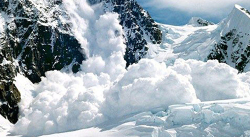
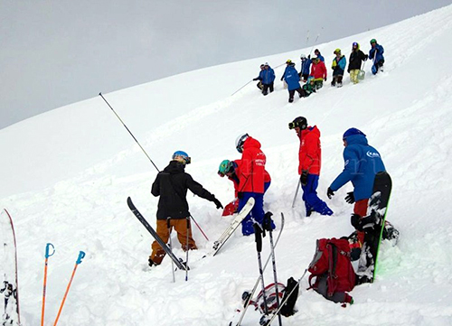

Знаете ли вы, друзья, что такое powder day ?
Если вы полезли в гугл
переводчик и, прочитав дословный перевод
— «день порошка» — заподозрили что-то нехорошее, значит — эта статья не для вас.
Потому что, скорее всего, вы никогда не «взрывали» эту самую снежную «пудру», или
«пухляк», он же «пухло», и
вообще слабо понимаете, о чём идёт речь.

Какие условия принято считать лавиноопасными?
- Переход холод-тепло/тепло-холод: это самая часто встречающаяся в горах ситуация. Однако без
наблюдений за изменениями метеорологических факторов (температура, ветер, его скорость и направление,
количество осадков и т.д.) распознать её довольно трудно. Особое внимание следует уделить смене
теплого периода холодным или оборот, холодного — теплым. Что происходит в снежном покрове, при таких
температурных переходах? Друг на друга ложатся слои снега, сильно отличающиеся по температуре.
Сцепление между этими слоями плохое, и всё это грозит сойти вниз при первом же удобном случае.
- Снегопад после длительного холодного периода: как минимум, один раз в течение
зимы — а в большинстве случаев несколько раз — устанавливается достаточно длинный холодный период. В
это время обычно светит солнце, при спуске разлетается пушистый искрящийся снежок, и лавинная
опасность к концу холодного периода минимальна. Но как только начинается снегопад, сопряженный с
ветром или если просто дует сильный ветер, картина сильно меняется. И склон, по которому ещё вчера
можно было спускаться без опаски, за несколько часов превращается в смертельную ловушку!
- Дождь: это классический сигнал тревоги, который оказывает отрицательное
влияние на снежный покров. Непосредственно во время дождя, через снежный покров просачивается вода и в
толще снега образуются целые невидимые ручейки. Которые питают и подмывают эту толщу, и вот она уже
под собственной тяжестью готова съехать вниз…
- Ветровой перенос: ветер — ещё один «архитектор» лавин. Он воздействует как на
выпадающий, так и на уже выпавший снег. Ветровой перенос очень часто ведёт к увеличению лавинной
опасности. Чем холоднее переносимый снег, тем более чувствительней он реагирует на нагрузку. Признаки
работы ветра легко распознать на местности, это — образование снежных карнизов, дюн.
- Весенний период: вот тут как раз не требуется семи пядей во лбу,
чтобы понимать что это самый лавиноопасный период. Ведь к началу снеготаяния снежный покров
на склонах достигает наибольшей плотности; прогревание снега на весеннем солнце, температурное
потепление — все это вызывает появление в снежном покрове воды в большом количестве, что в свою
очередь вызывает изменения его механических свойств. Весной в горах поумолчанию повышенная лавинная
опасность, связанная с вероятностью схода мокрых лавин.

Лавинное снаряжение:
Итак, если уж вам предстоит проверить на прочность снежный покров вооон на том
нераскатанном склоне,
положите ещё вечером (желательно — на трезвую голову))))) в ваш рюкзак следующие предметы:
- лавинную лопату
- лавинный щуп
- аптечку
- фонарик
- бипер